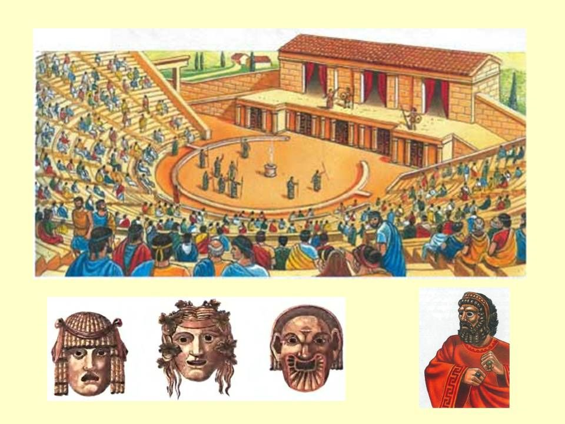
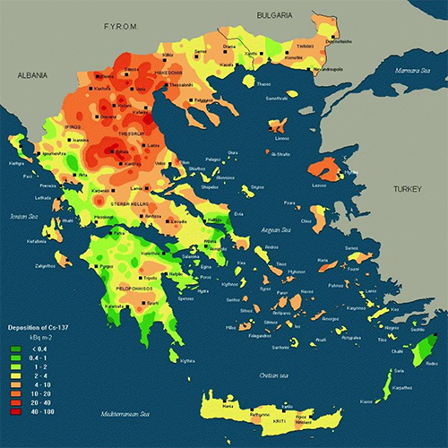
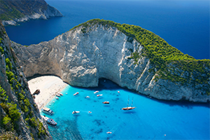
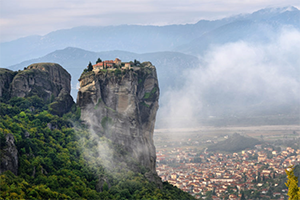
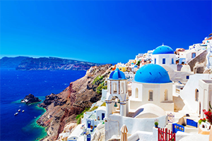
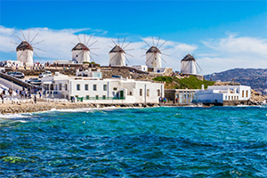
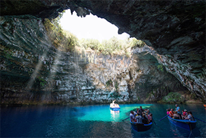

Останки древнейших архантропов возрастом в 360 тысяч лет найдены в пещере Петралоне. Известны также останки неандертальцев, живших 40 тыс. лет назад на территории Пелопоннеса. Примечательным в истории Греции является разрыв в находках человека, приходящийся на верхний палеолит и мезолит. Неолит Греции имеет анатолийское происхождение и представлен культурами Сескло, Неа Никомедия и Димини (южный вариант Винча). Одной из древнейших неолитических стоянок в Греции считается пещера Франхти (греч. Σπήλαιο Φράγχθι), датированная 7 тыс. лет до н. э., свидетельствует о наличии у её обитателей развитого мореходства

Страна в Южной Европе, расположенная на Балканском полуострове и тысячах островов в Эгейском и Ионическом морях. Она является наследницей могущественной Древней Греции, которая считается колыбелью западной цивилизации.
Можно выделить три самых распространенных климата в Греции: Средиземноморский, Среднеевропейский и Альпийский. Средиземноморский климат в Греции распространился на Крите, в Афинах и Кикландских островах. Зима благодаря ему мягкая и влажная, а лето – сухое и жаркое.

Кухня Греции вобрала в себя все традиции средиземноморской кулинарии: она щедро использует свежие овощи, пряные травы, оливковое масло, морепродукты. Способы приготовления, которые предпочитают греки, делают еду здоровой и полезной, что так важно для питания детей. А еще греческая кухня имеет свои секреты, благодаря которым простые, бесхитростные блюда имеют особенный вкус.

Гости острова Закинфа, которых интересуют достопримечательности Греции, обязательно должны посетить уникальный в своем роде пляж Навагио. Сюда путешественники могут попасть только на корабле, так как это место скрыто от посторонних глаз. Туристы, которые не знают, что посмотреть в Греции, будут рады посетить Навагио, жемчужину этих краев. Местный пляж покрыт золотистым песком, омываемым кристально чистой водой. Это настоящий кусочек рая, с которым никогда не захочется прощаться.

В северной части Греции, около города Каламбака, расположено уникальное место под названием Метеора. Отличается оно своей красотой и необычной историей появления. Кроме того, здесь расположено несколько монастырей. Под воздействием природных явлений за многие тысячелетия были образованы огромные каменные столпы, высота которых – от 300 до 600 м. Подниматься по таким скалам не рискнут многие из современных альпинистов, но это не помешало отшельникам построить там храмы.

Этот небольшой остров считается одним из самых красивых мест отдыха на территории Греции. Легенды гласят, что в давние времена Санторини откололся от Ливии в результате стихийного бедствия или был создан из специального отколотого от этой страны богами куска земли. Оценивая, что посмотреть в Греции, нужно обязательно включить в этот список остров Санторини.

Одной из главных достопримечательностей и визитной карточкой острова Миконос являются ветряные мельницы. Когда корабль только приближается к берегам острова, можно увидеть захватывающее зрелище из вращающихся ветряков.

Греческий остров Кефалония славится различными памятниками архитектуры и удивительной природой, чем привлекает туристов. Что посетить в Греции и где стоит обязательно побывать, интересует многих отдыхающих. Основной достопримечательностью остается озеро в пещере Мелиссани. Вода в нем настолько чистая и прозрачная, что можно видеть, что находиться на десятиметровой глубине.